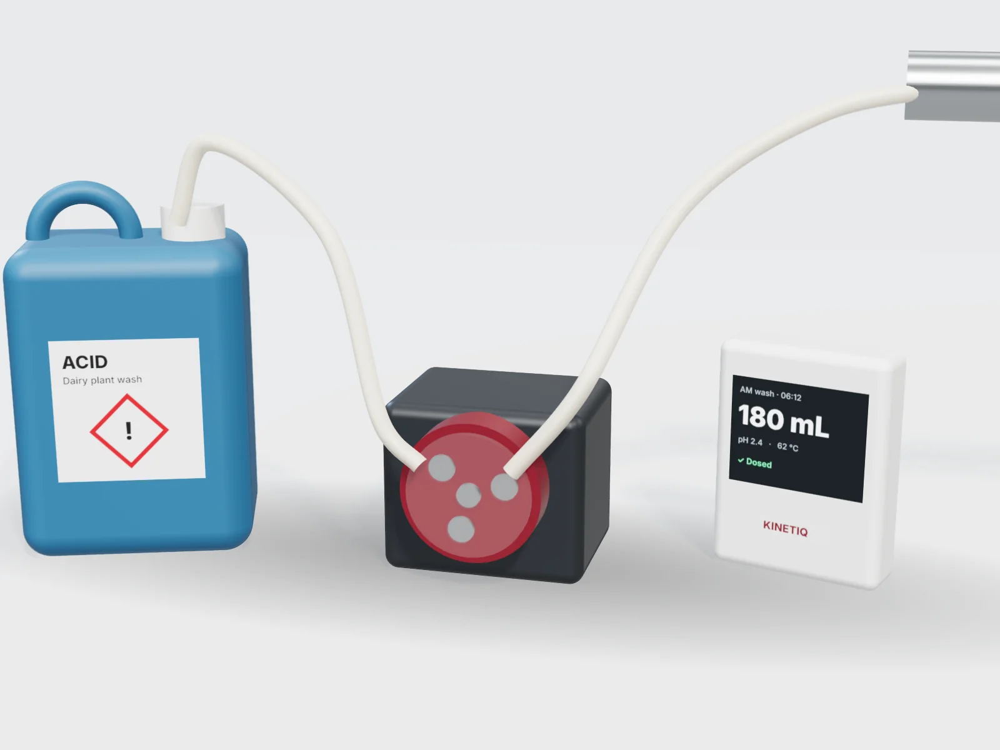

Projects / Automated acid dosing
Mock-upThe right acid dose in every dairy wash, without anyone pouring it.
Plant wash often means someone measuring acid by hand, twice a day. Our concept draws straight from the drum, doses the right amount for each wash and keeps a record you can show your milk company.

This product is a design mock-up. The render shows how it could look, and the details below will change as we design and test it.
How it would work
The idea
Measured to the millilitre
A peristaltic pump delivers a set volume each wash: never too weak to clean, never too strong for the rubberware.
No hand-handling
Acid goes straight from drum to wash line. Less splashing, fewer burns and no measuring jug.
Triggered by the wash
The controller senses when a wash starts and doses at the right point in the cycle.
Wash records
Every wash logged with time, dose and temperature, ready for audits.
Low-drum warning
A level sensor warns you before the drum runs out, so no wash runs without acid.
Alkali too
A second pump can handle detergent or alkali on alternate washes.
Planned specifications
Early targets
Concept-stage numbers, shared so you can tell us whether they fit your setup.
| Dose range | 50 mL to 2 L per wash, adjustable |
|---|---|
| Pumps | 1 or 2 peristaltic, acid-rated tubing |
| Sensors | Drum level, wash temperature, optional conductivity |
| Records | Stored on the controller, exportable to a spreadsheet |
Run a dairy shed?
Tell us about your plant wash setup and herd size.